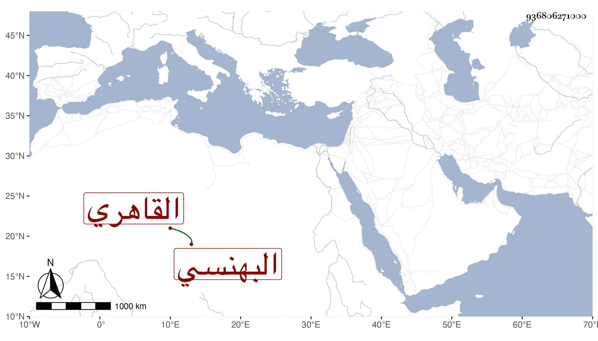

0902Sakhawi.DawLamic.ITO20230111-ara1.EIS1600.936806271000
Biography ID: 936806271000
1190
يوسف بن رسلان بن محمد دغش بدال مهملة ثم معجمتين كعبس البهنسي الأصل القاهري كان ماورديا جميلا فتقرب من الغرس خليل بن خاص بك وصهره اينال بضميمته وحج قبل رياسته فلما تسلطن صار ذا أمر ونهي وأثرى وابتني دارا هائلة وتكلم في العمائر السلطانية وغيرها بل كان ناظر الذخيرة والشربخاناه والمطبخ السلطاني مع الشهادة به تلقاها عن المحرقي ، قصد في قضايا وعد في الاعيان مع عاميته . مات في جمادى الأولى سنة سبع وستين وقد زاحم الستين ودفن بتربة قشتمر خارج باب الجديد جوار مقصورة قراقجا الحسني بمقصورة أنشأها لنفسه فيها سامحه الله وإيانا .
